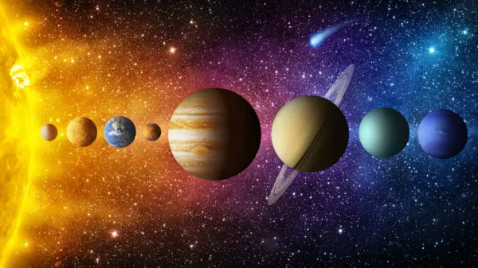
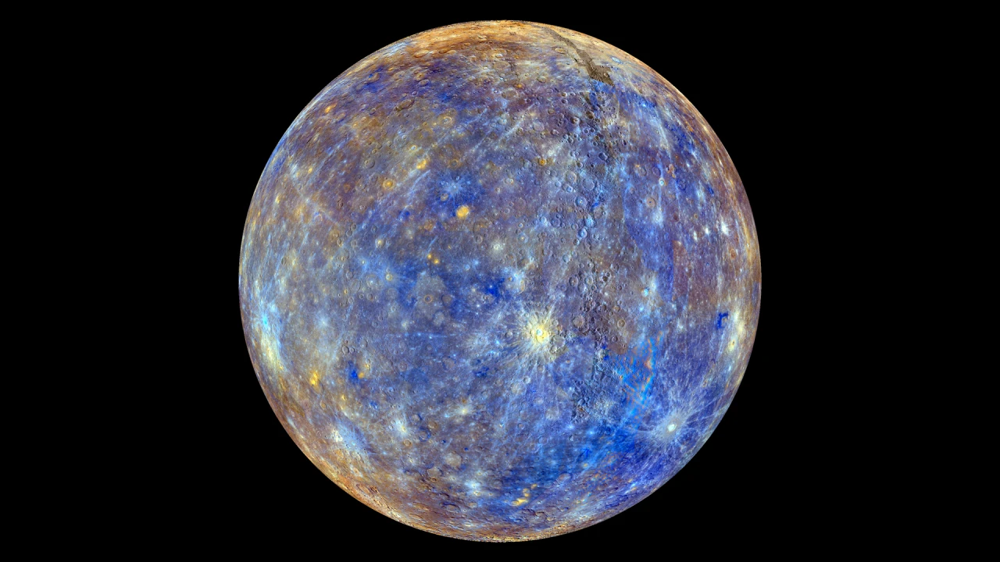
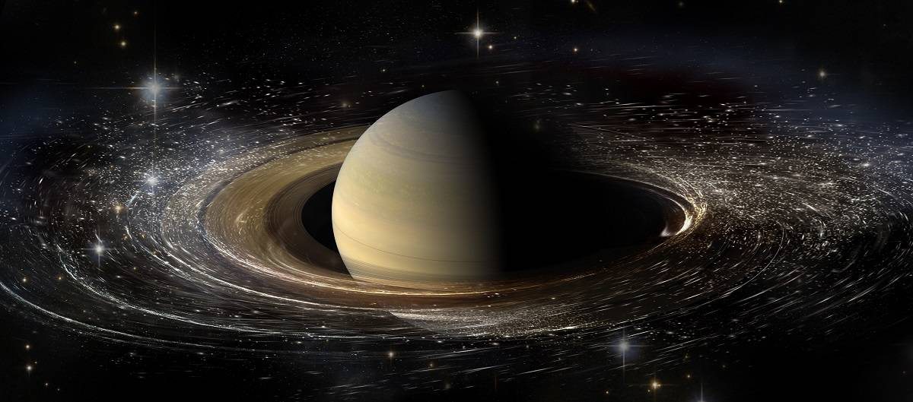
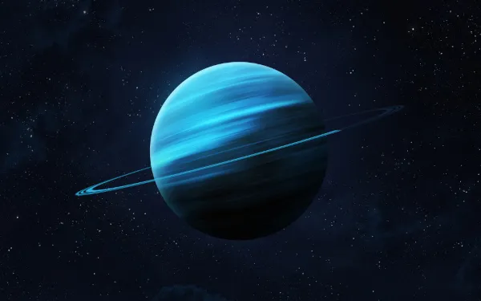

🌌 sobre o sistema solar
O Sistema Solar é um conjunto formado por oito planetas e outros corpos celestes, que orbitam o Sol, a sua principal estrela. Está localizado na Via Láctea, uma das galáxias que formam o Universo. São planetas do Sistema Solar: Mercúrio, Vênus, Terra, Marte, Júpiter, Saturno, Urano e Netuno.Esses corpos celestes não são apenas os planetas mas também seus satélites, corpos congelados como cometas, asteroides, meteoroides, planetas anões, entre outros.
🌎 planeta mercúrio
O planeta Mercúrio possui três recordes: é o mais rápido, o mais próximo do sol e o menor planeta do sistema solar. Mercúrio é o primeiro planeta do sistema solar, a contar a partir da proximidade com o Sol, distando-se em apenas 57,9 milhões de quilômetros da estrela em média. Com um diâmetro de 4878 km, é o menor entre os planetas do nosso sistema solar e também o que realiza mais rapidamente o seu movimento de translação, executado a uma velocidade de aproximadamente 47,87 km/s, levando, assim, 88 dias para completar sua volta ao redor do sol.
Quanto ao movimento de rotação, o planeta Mercúrio executa-o apenas três vezes durante duas órbitas de translação, o que faz com que o seu dia solar seja o equivalente a 173 dias terrestres. Além disso, esse movimento de rotação acontece com o seu eixo perpendicular ao plano da órbita, por isso, Mercúrio não apresenta estações do ano e alguns locais não recebem a luz do sol.
🌎 planeta vênus
Vênus é um planeta do sistema solar, localiza-se no segundo lugar a partir do sol, além disso, é o sexto maior entre todos os outros planetas.
Vênus possui tamanho e massa semelhante a do planeta Terra, por isso os planetas citados eram considerados gêmeos, no entanto, as características parecidas se limitam à proporção corporal. Salvo esse ponto apresentado, os dois planetas são totalmente distintos, uma vez que Vênus não oferece condições para proliferação de vida.

Em Vênus a atmosfera é muito compacta, formada por uma enorme quantidade de gás carbônico, por ser muito densa desenvolve um elevado efeito estufa que faz o planeta produzir altíssimas temperaturas. Onde os raios solares incidem de forma perpendicular na superfície do planeta as temperaturas atingem até 460ºC.
🌎 planeta terra
O Planeta Terra é um dos planetas que fazem parte do Sistema Solar e é o terceiro planeta mais próximo do Sol. A sua formação ocorreu há bilhões de anos, assim como a existência de vida aqui . Algumas teorias explicam sua origem, como a teoria da nebulosa solar.
A Terra é considerada um planeta telúrico e possui sua estrutura interna dividida em: crosta terrestre, manto e núcleo. Além da estrutura interna, há também a externa que corresponde à litosfera, hidrosfera, biosfera e atmosfera, que são o que oferece as condições favoráveis para a existência de vida aqui.
O Planeta Terra, também conhecido como mundo, planeta azul ou planeta água, tem cerca de 70% da sua superfície coberta por água. A existência dessa substância em seu estado líquido, juntamente à presença do oxigênio e a capacidade de reciclar gás carbônico fazem da Terra um planeta com características únicas.
Apesar das grandes descobertas astronômicas, não há ainda como afirmar que exista um planeta com características tão peculiares capaz de propiciar a existência dos seres vivos. E a Terra não é “viva” apenas sob a ótica biológica, mas também sob a ótica atmosférica, geológica e física, uma vez que tudo isso está em constante transformação.
🌎 planeta marte
Marte é o quarto planeta do Sistema Solar, ficando entre a Terra e Júpiter. A 227 milhões de km do Sol, é um planeta formado por superfície rochosa e atmosfera rica em CO2.
Marte é um dos oito planetas do Sistema Solar. É o quarto a partir do Sol, estando localizado a uma distância de pouco mais de 227 milhões de quilômetros desse astro. O planeta Marte completa uma volta ao redor do próprio eixo em 24 horas e 37 minutos, ao passo que o movimento de translação demora 687 dias. Trata-se de um planeta terroso com uma fina atmosfera composta predominantemente por dióxido de carbono. Dispõe de duas luas: Phobos e Deimos.

🌎 planeta júpiter
Júpiter é considerado o maior planeta do Sistema Solar, sendo rodeado de vários satélites naturais. É o quinto na ordem dos planetas tendo-se o Sol como a referência.

Júpiter é o maior planeta do Sistema Solar, estando situado entre Marte e Saturno. Seu tamanho rende-lhe vários satélites naturais orbitando ao seu redor, cerca de 70. Durante a noite, esse planeta pode ser visto a olho nu, sendo a segunda estrela mais brilhante, atrás apenas de Vênus, o segundo planeta na ordem usando-se o Sol como referência.
🪐 planeta saturno
Saturno, que é o segundo maior planeta do nosso sistema solar, tem um diâmetro nove vezes maior que o da Terra e é composto, em maior parte, por hidrogênio.
Saturno é o sexto planeta do Sistema Solar — contando-se a partir da distância do sol —, sendo mais conhecido pelos anéis que o circundam. Trata-se do segundo maior planeta desse sistema, atrás apenas de Júpiter, apresentando um diâmetro de 120 536 km, que é cerca de nove vezes maior que o diâmetro equatorial terrestre.
O movimento de rotação do planeta Saturno é bastante acelerado, o que reverbera no achatamento de seus polos. No total, o planeta leva cerca de 10 horas e 39 minutos para completar uma volta em torno de si mesmo, enquanto o seu movimento de translação leva cerca de 29 anos, 167 dias e 6 horas terrestres para completar-se.
🌎 planeta urano
Planeta Urano é um dos maiores do Sistema Solar, sendo o sétimo a partir do Sol. Dispõe de um sistema de anéis e é formado principalmente por gases e líquidos.
O planeta Urano é o terceiro maior do Sistema Solar e está posicionado na sétima órbita a partir do Sol. Formado principalmente por gases e fluidos, Urano não possui uma superfície sólida como a Terra. Ao todo, Urano possui 27 luas conhecidas. Apenas uma sonda espacial visitou o planeta, sendo a maior parte das descobertas ao seu respeito feita com o auxílio de telescópios.
Urano tem 13 anéis conhecidos e 11 deles são visíveis nesta imagem do Webb. Alguns dos anéis parecem tão brilhantes que parecem ser um único anel maior.
🌎 planeta netuno
Netuno é o oitavo planeta do Sistema Solar a partir do Sol e o mais distante deste. Dispõe de coloração azulada e é formado essencialmente por gases, como o metano.

Netuno é um planeta pertencente ao Sistema Solar. Trata-se do oitavo mais distante do Sol, o que confere a ele temperaturas muito baixas, em torno de -200 °C. O planeta Netuno é classificado como um gigante de gelo em função de sua composição, que é feita por gases como hélio, metano, hidrogênio e amônia, e da ausência de uma superfície sólida. Netuno foi descoberto em 1846 e, desde então, foi muito estudado por astrônomos de todo o mundo. Apesar disso, é ainda um planeta pouco explorado.
escala de tamanho de planetas
No nosso sistema solar existem planetas com tamanhos variados sendo eles gigantes gasosos e rochosos, veja os planetas do maior para o menor.
| colocação | planeta | diametro |
|---|---|---|
| 1 | jupiter | 139.820km |
| 2 | saturno | 116.460km |
| 3 | urano | 50.724km |
| 4 | netuno | 49.244km |
| 5 | terra | 12.742km |
| 6 | vênus | 12.104km |
| 7 | marte | 6.779km |
| 8 | mercurio | 4.879,4km |